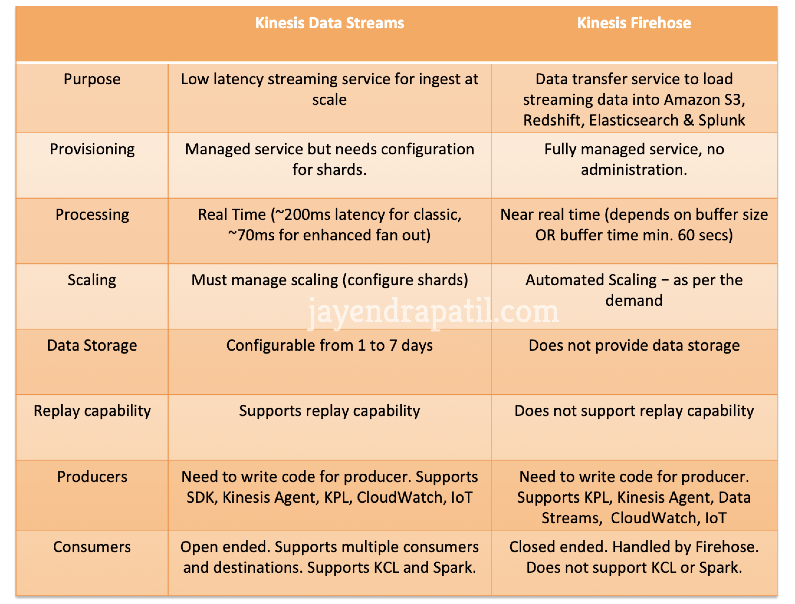

L7 AWS Analytics Services Cheat Sheet
1 Kinesis Data Streams – KDS
- enables real-time processing of streaming data at massive scale
- provides ordering of records per shard
- provides an ability to read and/or replay records in the same order
- allows multiple applications to consume the same data
- data is replicated across three data centers within a region
- data is preserved for 24 hours, by default, and can be extended to 7 days
- data inserted in Kinesis, it can’t be deleted (immutability) but only expires
- streams can be scaled using multiple shards, based on the partition key
- each shard provides the capacity of 1MB/sec data input and 2MB/sec data output with 1000 PUT requests per second
1-1 Kinesis vs SQS
- real-time processing of streaming big data vs reliable, highly scalable hosted queue for storing messages
- ordered records, as well as the ability to read and/or replay records in the same order vs no guarantee on data ordering (with the standard queues before the FIFO queue feature was released)
- data storage up to 24 hours, extended to 7 days vs 1 minute to extended to 14 days but cleared if deleted by the consumer
- supports multiple consumers vs single consumer at a time and requires multiple queues to deliver message to multiple consumers
1-2 Kinesis Producer
-
API
- PutRecord and PutRecords are synchronous
- PutRecords uses batching and increases throughput
- might experience ProvisionedThroughputExceeded Exceptions, when sending more data.
- Use retries with backoff, resharding or change partition key.
-
KPL
- producer supports synchronous or asynchronous use cases
- supports inbuilt batching and retry mechanism
-
Kinesis Agent can help monitor log files and send them to KDS
- supports third party libraries like Spark, Flume, Kafka connect etc.
1-3 Kinesis Consumers
- Kinesis SDK
- Records are polled by consumers from a shard
-
Kinesis Client Library (KCL)
- Read records from Kinesis produced with the KPL (de-aggregation)
- supports checkpointing feature to keep track of the application’s state and resume progress using DynamoDB table
- if KDS application receives provisioned-throughput exceptions, increase the provisioned throughput for the DynamoDB table
-
Kinesis Connector Library – can be replaced using Firehose or Lambda
- Third party libraries: Spark, Log4J Appenders, Flume, Kafka Connect…
- Kinesis Firehose, AWS Lambda
- Kinesis Consumer Enhanced Fan-Out
- supports Multiple Consumer applications for the same Stream
- provides Low Latency ~70ms
- Higher costs
- Default limit of 5 consumers using enhanced fan-out per data stream
1-4 Kinesis Security
- allows access / authorization control using IAM policies
- supports Encryption in flight using HTTPS endpoints
- supports Data encryption at rest either using client side encryption before pushing the data to data streams or server side encryption
- upports VPC Endpoints to access within VPC
2、Kinesis Data Firehose – KDF
data transfer solution for delivering real time streaming data to destinations such as S3, Redshift, Elasticsearch service, and Splunk.
is a fully managed service that automatically scales to match the throughput of your data and requires no ongoing administration
is Near Real Time (min. 60 secs) as it buffers incoming streaming data to a certain size or for a certain period of time before delivering it
supports batching, compression, and encryption of the data before loading it, minimizing the amount of storage used at the destination and increasing security
supports data compression, minimizing the amount of storage used at the destination. It currently supports GZIP, ZIP, and SNAPPY compression formats. Only GZIP is supported if the data is further loaded to Redshift.
supports out of box data transformation as well as custom transformation using Lambda function to transform incoming source data and deliver the transformed data to destinations
uses at least once semantics for data delivery.
supports multiple producers as datasource, which include Kinesis data stream, KPL, Kinesis Agent, or the Kinesis Data Firehose API using the AWS SDK, CloudWatch Logs, CloudWatch Events, or AWS IoT
- does NOT support consumers like Spark and KCL
supports interface VPC endpoint to keep traffic between the VPC and Kinesis Data Firehose from leaving the Amazon network.
3 Kinesis Data Streams vs Kinesis Data Firehose

4、Kinesis Data Analytics
- helps analyze streaming data, gain actionable insights, and respond to the business and customer needs in real time.
- reduces the complexity of building, managing, and integrating streaming applications with other AWS service
5、 Redshift
- Redshift is a fast, fully managed data warehouse
- provides simple and cost-effective solution to analyze all the data using standard SQL and the existing Business Intelligence (BI) tools.
- manages the work needed to set up, operate, and scale a data warehouse, from provisioning the infrastructure capacity to automating ongoing administrative tasks such as backups, and patching.
- automatically monitors your nodes and drives to help you recover from failures.
- only supports Single-AZ deployments.
- replicates all the data within the data warehouse cluster when it is loaded and also continuously backs up your data to S3.
- attempts to maintain at least three copies of your data (the original and replica on the compute nodes and a backup in S3).
- supports cross-region snapshot replication to another region for disaster recovery
- Redshift supports four distribution styles; AUTO, EVEN, KEY, or ALL.
- KEY distribution uses a single column as distribution key (DISTKEY) and helps place matching values on the same node slice
- Even distribution distributes the rows across the slices in a round-robin fashion, regardless of the values in any particular column
- ALL distribution replicates whole table in every compute node.
- AUTO distribution lets Redshift assigns an optimal distribution style based on the size of the table data
5-1 Redshift supports Compound and Interleaved sort keys
Compound key
-
is made up of all of the columns listed in the sort key definition,
-
in the order they are listed and is more efficient when query predicates use a prefix, or query’s filter applies conditions, such as filters and joins, which is a subset of the sort key columns in order.
Interleaved sort key
- gives equal weight to each column in the sort key, so query predicates can use any subset of the columns that make up the sort key, in any order.
- Not ideal for monotonically increasing attributes
Column encodings CANNOT be changed once created.
supports query queues for Workload Management, in order to manage concurrency and resource planning. It is a best practice to have separate queues for long running resource-intensive queries and fast queries that don’t require big amounts of memory and CPU
Supports Enhanced VPC routing
5-2 Import/Export Data
- UNLOAD helps copy data from Redshift table to S3
-
COPY command
- helps copy data from S3 to Redshift
- also supports EMR, DynamoDB, remote hosts using SSH
- parallelized and efficient
- can decrypt data as it is loaded from S3
- DON’T use multiple concurrent COPY commands to load one table from multiple files as Redshift is forced to perform a serialized load, which is much slower.
- supports data decryption when loading data, if data encrypted
- supports decompressing data, if data is compressed.
-
Split the Load Data into Multiple Files
- Load the data in sort key order to avoid needing to vacuum.
- Use a Manifest File
- provides Data consistency, to avoid S3 eventual consistency issues
- helps specify different S3 locations in a more efficient way that with the use of S3 prefixes.
5-3 Redshift Spectrum
- helps query and retrieve structured and semistructured data from files in S3 without having to load the data into Redshift tables
- Redshift Spectrum external tables are read-only.
- You can’t COPY or INSERT to an external table.
6 EMR
- is a web service that utilizes a hosted Hadoop framework running on the web-scale infrastructure of EC2 and S3
- launches all nodes for a given cluster in the same Availability Zone, which improves performance as it provides higher data access rate
- seamlessly supports Reserved, On-Demand and Spot Instances
- consists of Master Node for management and Slave nodes, which consists of Core nodes holding data and Task nodes for performing tasks only
- is fault tolerant for slave node failures and continues job execution if a slave node goes down
- does not automatically provision another node to take over failed slaves
- supports Persistent and Transient cluster types
- Persistent which continue to run
- Transient which terminates once the job steps are completed
- supports EMRFS which allows S3 to be used as a durable HA data storage
7 Glue
- fully-managed ETL service that automates the time-consuming steps of data preparation for analytics
- is serverless and supports pay-as-you-go model.
- recommends and generates ETL code to transform the source data into target schemas, and runs the ETL jobs on a fully managed, scale-out Apache Spark environment to load your data into its destination.
- helps setup, orchestrate, and monitor complex data flows.
- natively supports RDS, Redshift, S3 and databases on EC2 instances.
- supports server side encryption for data at rest and SSL for data in motion.
- provides development endpoints to edit, debug, and test the code it generates.
7-1 AWS Glue Data Catalog
- is a central repository to store structural and operational metadata for all the data assets.
- automatically discovers and profiles the data
- automatically discover both structured and semi-structured data stored in the data lake on S3, Redshift, and other databases
- provides a unified view of the data that is available for ETL, querying and reporting using services like Athena, EMR, and Redshift Spectrum.、
- Each AWS account has one AWS Glue Data Catalog per region.
7-2 AWS Glue crawler
- connects to a data store, progresses through a prioritized list of classifiers to extract the schema of the data and other statistics, and then populates the Glue Data Catalog with this metadata
- can be scheduled to run periodically so that the metadata is always up-to-date and in-sync with the underlying data.
8 QuickSight
- is a very fast, easy-to-use, cloud-powered business analytics service that makes it easy to build visualizations, perform ad-hoc analysis, and quickly get business insights from their data, anytime, on any device.
- delivers fast and responsive query performance by using a robust in-memory engine (SPICE).
- “SPICE” stands for a Super-fast, Parallel, In-memory Calculation Engine
- can also be configured to keep the data in SPICE up-to-date as the data in the underlying sources change.
- automatically replicates data for high availability and enables QuickSight to scale to support users to perform simultaneous fast interactive analysis across a wide variety of AWS data sources.
supports
- Excel files and flat files like CSV, TSV, CLF, ELF
- on-premises databases like PostgreSQL, SQL Server and MySQL
- SaaS applications like Salesforce
-
and AWS data sources such as Redshift, RDS, Aurora, Athena, and S3
-
supports various functions to format and transform the data.
- supports assorted visualizations that facilitate different analytical
approaches:
- Comparison and distribution – Bar charts (several assorted variants)
- Changes over time – Line graphs, Area line charts
- Correlation – Scatter plots, Heat maps
- Aggregation – Pie graphs, Tree maps
- Tabular – Pivot tables
9、Data Pipeline
- orchestration service that helps define data-driven workflows to automate and schedule regular data movement and data processing activities
- integrates with on-premises and cloud-based storage systems
- allows scheduling, retry, and failure logic for the workflows
10、 Elasticsearch
- Elasticsearch Service is a managed service that makes it easy to deploy, operate, and scale Elasticsearch clusters in the AWS Cloud.
10-1 Elasticsearch provides
- real-time, distributed search and analytics engine
- ability to provision all the resources for Elasticsearch cluster and launches the cluster
- easy to use cluster scaling options. Scaling Elasticsearch Service domain by adding or modifying instances, and storage volumes is an online operation that does not require any downtime.
- provides self-healing clusters, which automatically detects and replaces failed Elasticsearch nodes, reducing the overhead associated with self-managed infrastructures
- domain snapshots to back up and restore ES domains and replicate domains across AZs
- enhanced security with IAM, Network, Domain access policies, and fine-grained access control
- storage volumes for the data using EBS volumes
- ability to span cluster nodes across multiple AZs in the same region, known as zone awareness, for high availability and redundancy.
- Elasticsearch Service automatically distributes the primary and replica shards across instances in different AZs.
- dedicated master nodes to improve cluster stability
- data visualization using the Kibana tool
- integration with CloudWatch for monitoring ES domain metrics
- integration with CloudTrail for auditing configuration API calls to ES domains
- integration with S3, Kinesis, and DynamoDB for loading streaming data
- ability to handle structured and Unstructured data
- supports encryption at rest through KMS, node-to-node encryption over TLS, and the ability to require clients to communicate of HTTPS